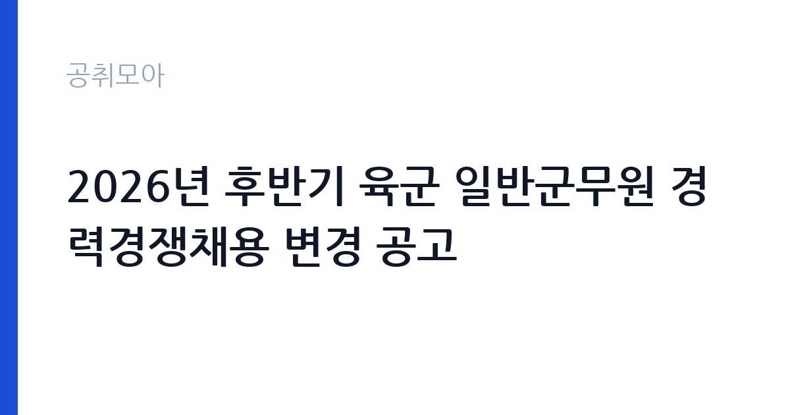

[국가기관] 2026년 후반기 육군 일반군무원 경력경쟁채용 변경 공고
국방부 국군조직 육군 · 전국 · 마감 2026-10-19 (D-12) · 출처 나라일터

한눈에 보는 모집 조건
| 기관 | 국방부 국군조직 육군 |
|---|---|
| 공고명 | 2026년 후반기 육군 일반군무원 경력경쟁채용 변경 공고 |
| 고용형태 | 정규직 |
| 근무지 | 전국 |
| 게시일 | 2026-10-07 |
| 마감일 | 2026-10-19 (D-12) |
지원자격, 이렇게 읽으세요
- 0급 0명
- 접수 ~2026-10-19 마감
- 세부 조건은 원문 공고문 확인
경력경쟁채용 응시자격은 직위별로 다르며, 남성은 병역을 마쳤거나 면제된 분만 지원할 수 있습니다. 사서와 항해, 약무, 병리, 방사선, 치무, 재활치료, 의무기록, 영양관리 등 일부 직렬은 관련 분야 자격증이나 면허증 소지가 필수입니다. 이번 변경 공고의 핵심은 바로 이 자격증과 면허증 기준이 바뀌었다는 점이므로, 해당 직렬 지원자는 변경 전후 기준을 대조해야 합니다. 채용 직위별 자격요건은 최초 공고 2026-41호의 본문과 붙임에서 확인하시기 바랍니다. 연령은 18세 이상이며 정년인 60세에 해당하면 응시할 수 없습니다.
이 공고의 포인트
이 공고의 핵심은 변경 사항 확인에 있습니다. 이미 2026-41호 공고를 보고 준비하던 분이라면, 가산 자격증과 응시 자격증 기준 변경이 본인의 가산점에 영향을 주는지 따져봐야 합니다. 후반기 경채는 필기시험 없이 서류와 면접 중심으로 진행되는 경우가 많아, 자격과 경력을 갖춘 분께는 공채보다 부담이 적은 경로입니다. 육군은 전체 군무원 채용의 절반 이상을 차지할 만큼 선발 규모가 커서 직렬 선택의 폭이 넓습니다. 정년 60세가 보장되는 특정직 국가공무원이라는 점도 큰 장점입니다. 마감인 10월 19일 전에 변경된 붙임 6을 내려받아 대조하는 것이 급선무입니다.
전형은 어떻게 진행되나
경력경쟁채용은 서류전형과 필기시험, 면접시험 순으로 진행되는 것이 일반적이며, 후반기 추가 경채는 필기 없이 서류와 면접으로 진행되는 경우도 있습니다. 서류전형에서는 직위별 자격요건 충족 여부와 경력, 자격증을 평가하므로 경력증명서와 자격증 사본을 정확히 준비해야 합니다. 필기가 있는 경우 국어와 직렬별 전공과목을 치르며, 영어는 영어능력검정시험, 한국사는 한국사능력검정시험 성적으로 대체합니다. 과락 기준은 과목당 40점 미만이므로 한 과목도 소홀히 할 수 없습니다. 최종 합격은 필기와 면접 점수를 합산해 결정하며, 세부 방식은 최초 공고문에서 확인하시기 바랍니다.
원문에서 확인한 전형 방식
2026년 후반기 육군 일반군무원 경력경쟁채용 변경 공고 * 육군 군무원 채용공고(2026-41호)의 [붙임 6] 군무원 공개경쟁채용 시험 응시 및 가산 자격증, 면허증 변경 * 그 외 내용은 최초공고(2026-41호) 내용과 동일
이런 분께 추천해요
- 관련 분야 자격증과 실무 경력을 갖춘 분께 추천합니다. 경채는 서류와 경력 경쟁력이 당락을 가릅니다.
- 안정적인 정년 보장 직장을 찾는 분께 추천합니다. 군무원은 60세 정년이 보장되는 국가공무원입니다.
- 전국 근무가 가능한 분께 추천합니다. 육군 부대 배치라 근무지 선택의 폭이 넓습니다.
지원 전 체크리스트
- 변경된 붙임 6의 자격증과 면허증 기준을 내려받아 본인 해당 여부를 대조했습니다.
- 최초 공고 2026-41호의 직위별 응시자격과 제출서류 목록을 확인했습니다.
- 경력증명서와 자격증 사본, 병적증명서 등 증빙서류를 준비했습니다.
- 마감일인 10월 19일 이전에 접수를 완료하고 접수증을 저장했습니다.
모집 일정과 제출 타이밍
마감일은 2026년 10월 19일입니다. 변경 공고라 이미 준비하던 분도 있을 테지만, 변경된 자격 기준 때문에 서류를 다시 갖춰야 하는 경우가 있으니 마감 직전 접수는 피하시기 바랍니다. 서류합격자 발표와 이후 일정은 최초 공고문의 전형 일정을 따릅니다. 자격증 사본과 경력증명서 발급에 며칠이 걸릴 수 있으니 즉시 신청하시기 바랍니다.
직무 이해하기: 국가기관
일반군무원은 국방 기술과 연구, 예비전력관리, 행정관리 분야에서 전문성을 발휘하는 특정직 국가공무원입니다. 군 부대에서 근무하지만 군인이 아니라 공무원이므로 일반직공무원 봉급표를 적용받습니다. 직렬은 행정과 기술, 연구, 기능 분야로 나뉘며, 배치 부대에 따라 시설관리와 정보화, 의무, 병참 등 실무를 맡습니다. 계급은 1급부터 9급까지이며, 입직은 9급이 가장 많습니다. 군 조직 특유의 규율과 보안 문화에 적응해야 하며, 전보에 따라 근무지가 바뀔 수 있습니다.
자기소개서 작성 팁
경채 자기소개서는 경력과 자격을 직무와 연결하는 것이 전부입니다. 관련 분야 실무 경험을 기간과 역할, 성과 순서로 구체적으로 쓰고, 보유 자격증이 해당 직위 업무에 어떻게 활용되는지 설명하시기 바랍니다. 군 조직 지원 동기는 국가 안보 기여와 전문성 발휘라는 두 축으로 정리하면 설득력이 커집니다. 수치로 증명할 수 있는 성과는 수치와 함께 제시하고, 보안과 규율을 중시하는 조직 문화에 대한 이해를 한 문장으로 보여주시기 바랍니다.
면접 준비 포인트
경채 면접은 직무 전문성과 조직 적합성을 집중적으로 평가합니다. 본인 경력 중 해당 직위와 직접 연결되는 경험을 사례 중심으로 정리하고, 예상 질문에 두괄식으로 답변하는 연습을 하시기 바랍니다. 군 조직 특유의 상황 질문이 나올 수 있으므로 침착하고 규율 있는 태도를 보여주는 것이 중요합니다. 자격증과 경력에 대해 깊이 있는 질문이 나오므로, 서류에 쓴 내용은 모두 설명할 수 있도록 준비하시기 바랍니다.
급여·근무조건 읽는 법
군무원은 군인 봉급표가 아니라 일반직공무원 봉급표를 적용받습니다. 2026년 기준으로 9급 1호봉 기본급은 월 213만3천원이며, 인사혁신처 발표 기준 9급 1호봉의 연 보수는 약 3,428만원 수준입니다. 월 단위 고정 지급액은 기본급에 정액급식비 16만원과 직급보조비를 더해 240만원대 후반이 되며, 명절휴가비와 정근수당, 시간외근무수당이 별도로 지급됩니다. 공제 후 초임 실수령액은 월 210만원 안팎으로 추산됩니다. 직급이 올라갈수록 기본급이 오르고, 5급 이상은 성과급적 연봉제로 전환됩니다. 정확한 호봉 획정과 수당 기준은 임용 안내에서 확인하시기 바랍니다.
자주 묻는 질문
- 이번 변경 공고에서 바뀐 것은 무엇입니까
2026-41호 공고의 붙임 6, 즉 공개경쟁채용 시험 응시와 가산 자격증, 면허증 기준이 변경되었습니다. 나머지 내용은 최초 공고와 동일하므로 해당 직렬 지원자는 변경 내용을 대조하시기 바랍니다. - 공채와 경채는 어떻게 다릅니까
공채는 필기와 면접으로 선발하고, 경채는 서류와 필기, 면접 순으로 진행됩니다. 후반기 추가 경채는 필기 없이 진행되는 경우도 있습니다. 2026년 군무원 공채 경쟁률은 10.2대 1, 경채는 2.1대 1 수준으로 안내된 바 있습니다. - 군무원의 정년과 신분은 어떻습니까
군무원은 60세 정년이 보장되는 특정직 국가공무원입니다. 군 부대에서 근무하지만 군인이 아니며, 일반직공무원 봉급표를 적용받습니다.
함께 보면 좋은 공고
[국가기관] 보건복지부 요양보험운영과 파견근무자 모집 (3차) — 마감 2026-10-23[국가기관] 창원지방법원 공무직 근로자(시설관리원) 채용 공고 — 마감 2026-10-19[국가기관] 2026년 제6회 서청주우체국 공무직 상시계약집배원(농어촌소포배달원) 채용 공고 — 마감 2026-10-15출처: 나라일터 공개정보를 바탕으로 공취모아가 정리한 안내글입니다. 모집 조건·일정은 변경될 수 있으니 지원 전 반드시 원문 공고문을 확인하세요. 본 글은 정보 제공용이며 합격을 보장하지 않습니다.